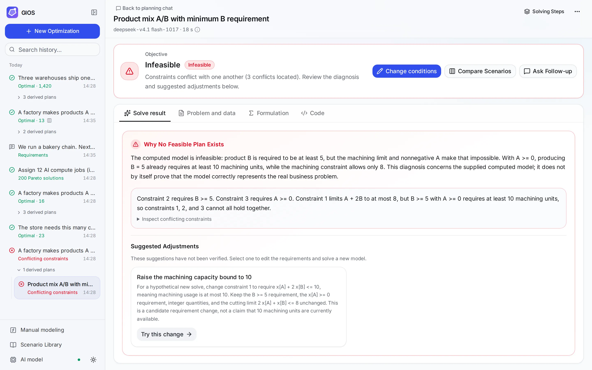

An infeasible result means the current requirements cannot hold together in the submitted model. When specific solver evidence is available, the platform connects conflicting constraints to business rules and provides a revision action.
Where to inspect it#
After the run, the Solve result tab shows “Why No Feasible Plan Exists.” Expand “Inspect conflicting constraints” to see the expressions or bounds behind the explanation. Formulation and code remain in adjacent tabs.

Linear-model diagnosis uses Gurobi IIS. Original evidence is retained for tracing business rules to mathematical expressions.
A concrete conflict#
Add B≥5 to production with 8 finishing hours. The relevant expressions are B≥5, A+2B≤8 and nonnegative quantities. The explanation maps these to minimum orders and finishing capacity.

Mermaid source
flowchart TB
Model["Current model infeasible"] --> Evidence["IIS / MUS evidence"]
Evidence --> Explain["Map to business requirements"]
Explain --> Edit["Prepare candidate revision"]
Edit --> New["User confirms and creates new plan"]
New --> Compare["Review new result and original"]
Try a revision from evidence#
The explanation can offer one evidence-based change. “Try this adjustment” fills the revision dialog. Edit the request and generate a new plan; the original remains saved.
For example, increase finishing capacity to 10 while keeping B≥5. This gives A=0, B=5 and objective 10. Alternatively, revise minimum demand according to business requirements and compute again.
Explore infeasibility in the example#
Set minimum B to 5 and inspect the status and explanation. Change it to 3 or 4 to see the corresponding plans.
A earns CNY 3 per unit and B earns CNY 2. Change available hours and minimum orders to compare quantities and total profit.
Maximize 3A + 2B
2A + B ≤ 8；A + 2B ≤ 8；B ≥ 0
A and B are nonnegative integers
Cutting: 8 / 8 hours. Finishing: 7 / 8 hours.
A fixed teaching example, computed instantly in your browser.
Continue from run information#
| Information | Action |
|---|---|
| Specific conflict constraints | Map to business rules and choose a change |
| Diagnosis execution error | Inspect error, license and model size |
| Native local-infeasibility status | Inspect starts, bounds and native feedback |
| Code execution error | Locate syntax, data or interface issues in process |
Diagnosis follows interface capabilities. CVXPY retains native status and model; Gurobi linear diagnosis can provide conflict evidence. See backends and revisions.